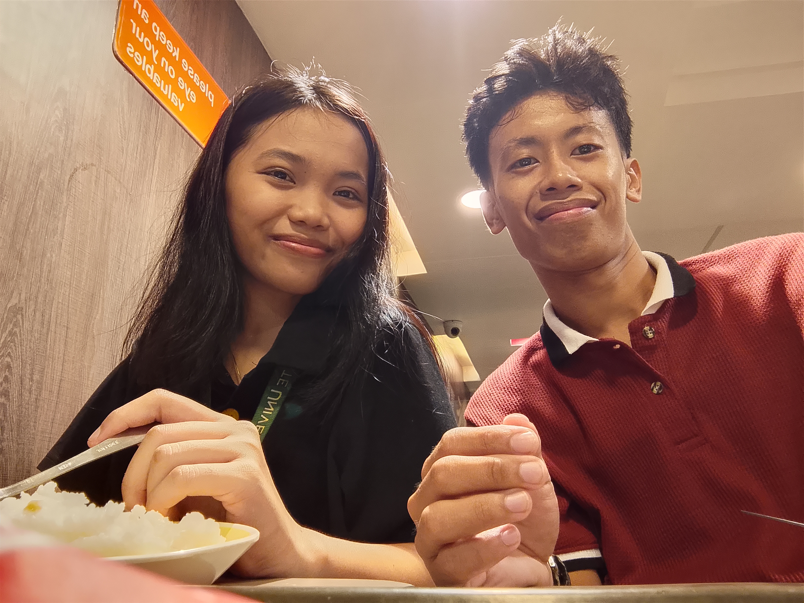
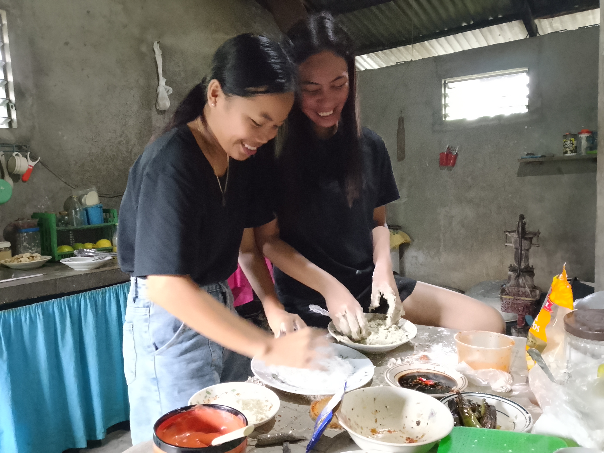
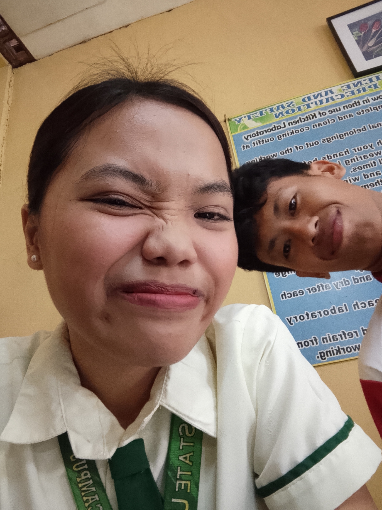
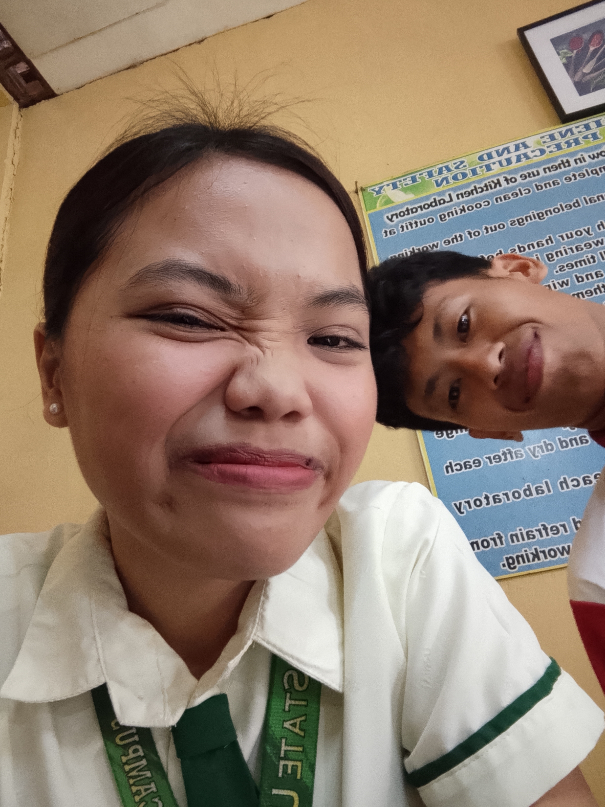
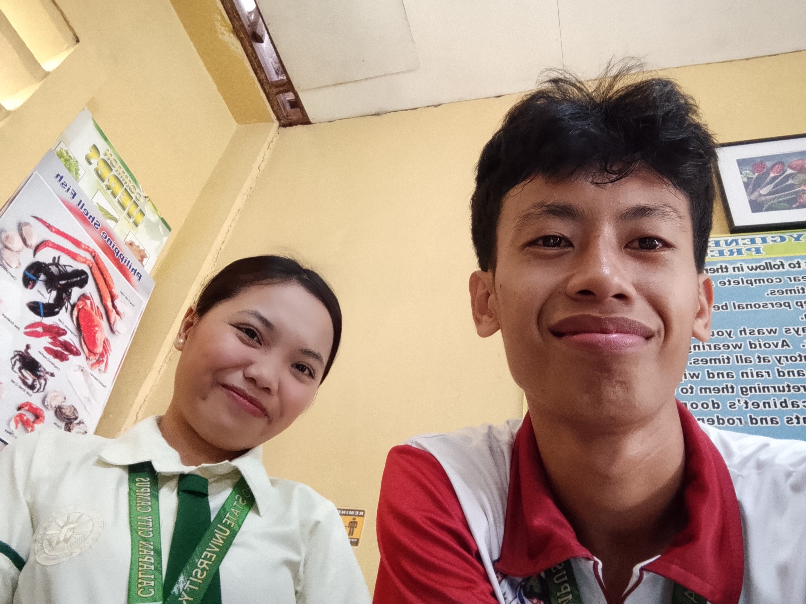
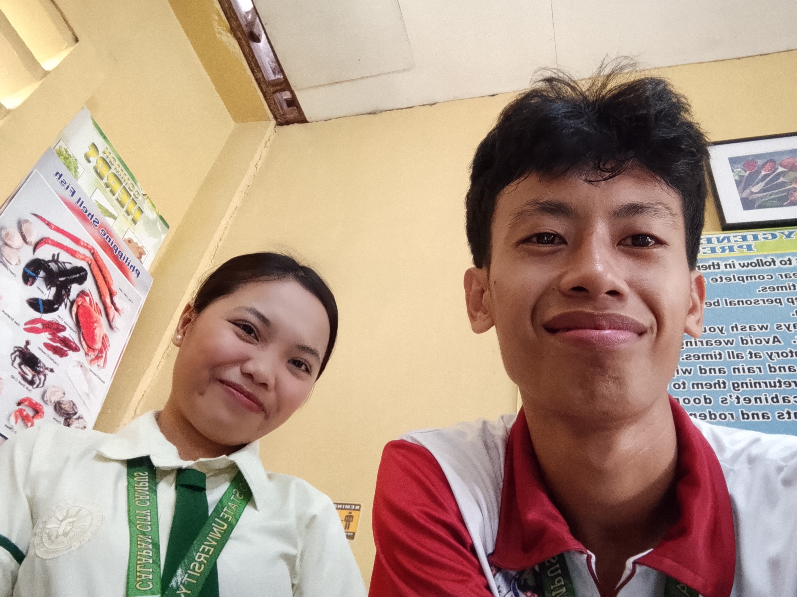
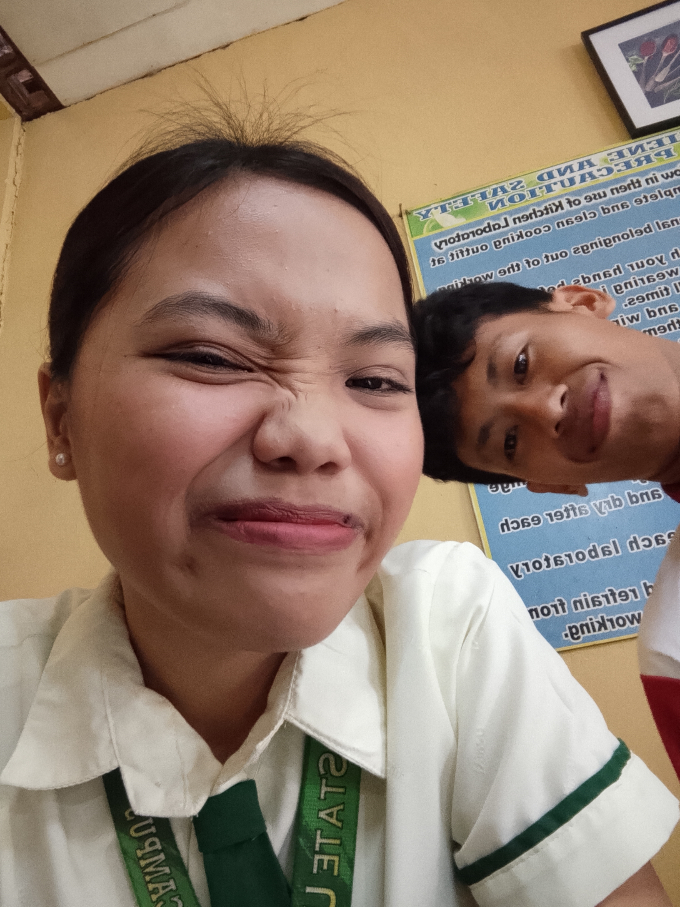
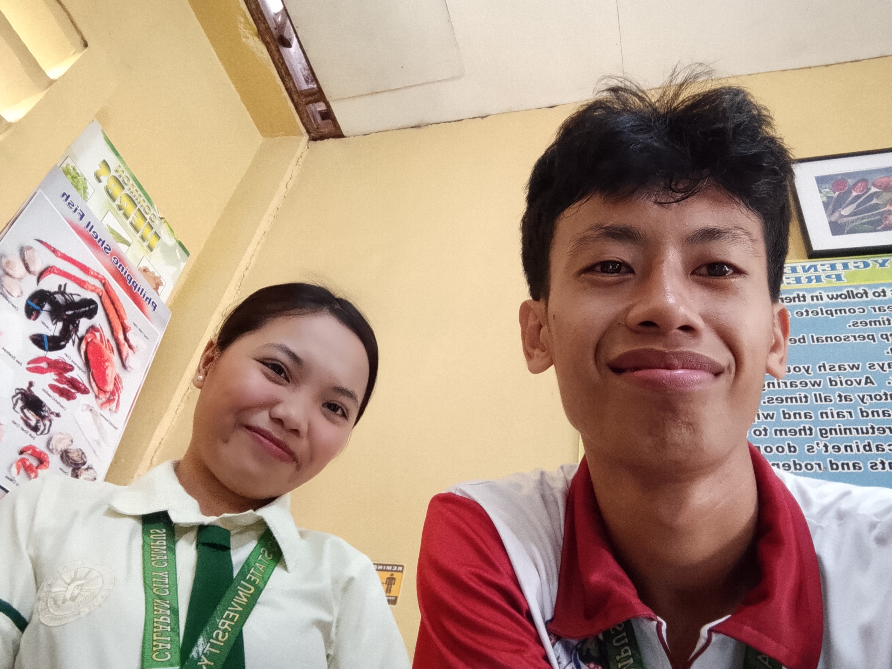
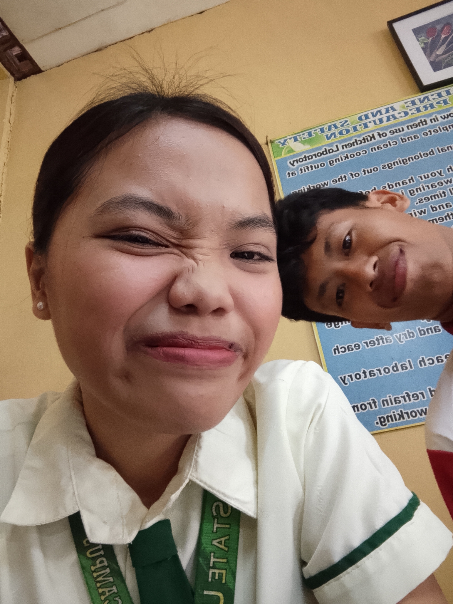
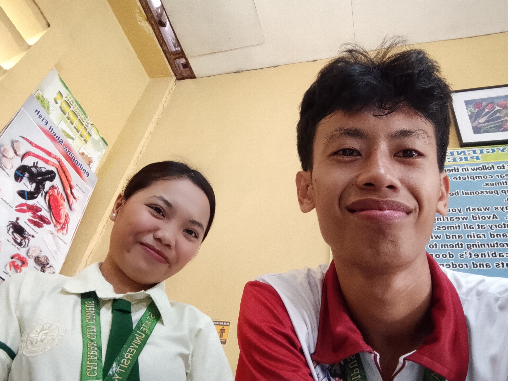

 

 







And dami kong pangako sayo eh at ang dami ring hindi ko natupad. Siguro kahit ikaw disappointed narin sakin....
Love, Baby thank you for the love na binigay mo sakin. Thank you for the warmth of love.
Bago ko simulan gusto kong humingi ng tawad sayo sa bastos na sinabi ko. Wala akong intention na bastusin ka. Walang mali sa suot mo kahit pa sando yan kase hindi naman revealing ang suot mo eh ako lang talaga ang iba at bastos tumingin. Gusto ko malaman mo na I respect you. Mataas yung respect ko sayo. And I’m sorry if nasabi ko yung ganon. Sorry dahil nabastos kita. I think you're probably disgusted narin sakin dahil dito kaya sana mapatawad mo pa po ako.
Thank you kase palagi kang nandyan sa mga panahon kailangan kita na hindi mo ako pinabayaan. Thank you for existing kase pinagaan mo yung buhay ko sa mga panahong andyan at tayo pa. If time will bring us back ikaw parin ang pipiliin ko at ikaw parin ang mamahalin ko. Wala akong pinagsisihan na ikaw ang pinili at minahal ko, sana ikaw din po.
Sana mapatawad mo ako dahil nagbago ako hindi ko natupad ang mga pangako ko sayo. Sa dami nang chance na hiningi at binigay mo sakin hindi ko parin natupad at naayos lahat. Pero sana malaman mo na pinilit ko, pinilit kong ayusin at baguhin ang sarili ko but I think it's too late, huli na ang lahat. Thank you for making me special, thank you for making me feel that I am special. I hope sa mga panahong magkasama tayo na feel mo rin yung love and care ko sayo that you also feel special with me. I hope I treated you right and gave you the love you deserve. I made too many promises na hindi ko na nagawa ng tuparin.
Gusto ko pa sana tuparin at bumawi sayo but you want to be free, gusto mo nang lumaya. Gusto kong maging masaya para sayo kase I know you’re happy narin kase nabigay ko na yung gusto mo. Siguro I will just support and Love you silently ng patago at hindi kana magugulo pa… If destiny won’t allow us I hope God hear my prayers na ingatan ka nya at ilayo ka sa mga tao na hindi ka balak seryosohin sana mapunta ka sa tao na handang kang intindihan sa mga panahong kahit ikaw naguguluhan na. Sana makatagpo ka nang taong hindi ka lolokohin at gagamitin ka lamang. I pray that God makes all you dreams come true kahit wag na yung sakin basta matupad lang yung pangarap mo para sa family at sarili mo. Patuloy kitang ipagdadasal na gabayan ka nya palagi.
Kung pagtagpuin man muli tayo ng tadhana at maayos pa natin. I will be that person na pinagdadasal ko kay God para sayo mas magiging matibay na ako para satin at sisiguraduhin ko na I am already in the best version of myself. Sisiguraduhin ko na hindi kana magsisisi pa muli.
For now I will be happy for you. I will support your decision. I will support and admire you silently. Pero sa totoo lang hindi ko talaga anong gagawin ko hindi ako sanay na wala ka, hindi ako sanay na ganto tayo. Hindi ko matanggap na ganito tayo matatapos walang usapan, walang kalinawan, just silence… Sana manlang kung nag end tayo hindi sana ganto, hindi na ako makatulog ng ayos kakaisip kung paano kahit papaano maayos eh na hindi ganito.
Sorry for being the worst, I see myself as the worst person you’ve ever met. I turned out to be the worst. Magaling lang ako sa umpisa sorry kase naging ganto ako. Sorry if hindi na ako yung Harniel na nakilala mo. At least proud ako sa isang bagay yun ay yung hindi kita napagtaasan ng boses ni isang beses, hindi kita nasabihan ng cursing words kahit isang beses pag nagaaway tayo. I know its bare minimum but still I’m proud of it.
Words can’t express how much I love you na gustong gusto ko pa ayusin tayo. I want you to know na hindi nabawasan yung love ko sayo. Kung gaano kita kamahal noon ganon parin ngayon. Sana hindi mo isipin na katawan lang habol ko sayo kase never ko naisip yan na mahalin ka dahil don, mababang reason at napaka walang kwenta kong tao kung ganon ako mag isip. Minahal kita dahil ikaw yan. I love you because it's you. Minahal kita dahil kamahal mahal ka at hindi ka mahirap mahalin. Just like what I said before kung may babaguhin man ako sayo ay wala kahit isang katangian na meron ka ay wala akong babaguhin dahil noon pa man wala ka pang binabago ay minahal na kita at mas minahal pa kita. I love every single part of you. I love every molecule and atom of you. I love you mula noon hanggang ngayon. I hope you get the peace that you always wanted. I pray na maabot mo lahat ng pangarap mo sa buhay kahit man ang mangyari ay hindi na ako ang kasama mo. I will always be happy and I will always support you. Again, I love you so much and proud ako sayo. Keep dreaming and do your best always.